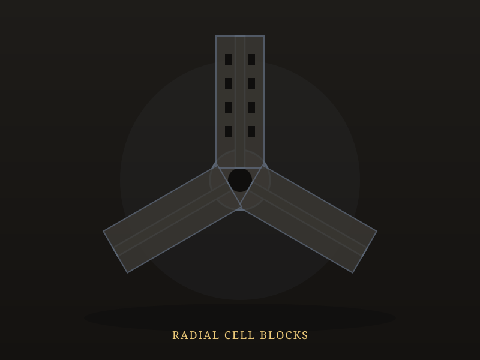
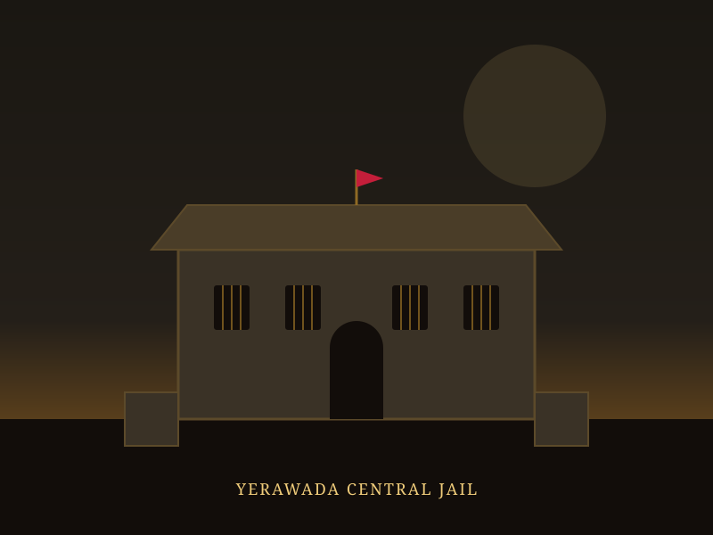
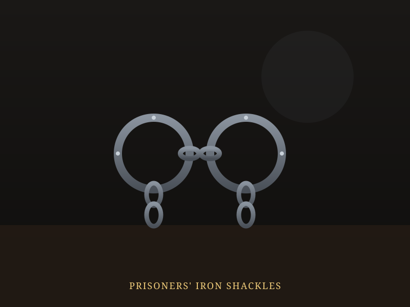
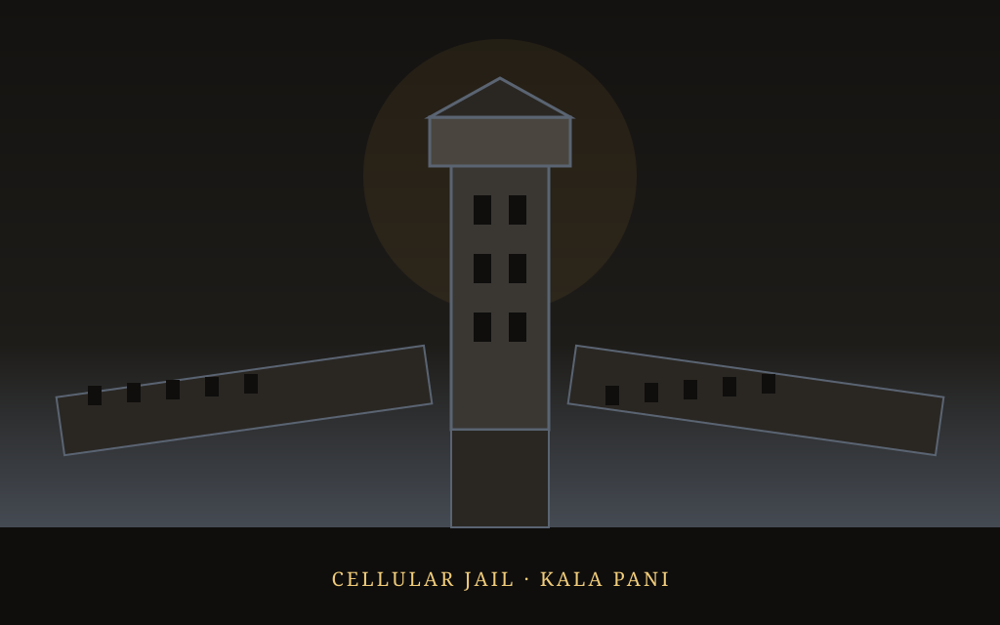

Cellular Jail & Colonial Imprisonment
Step into the network of prisons and detention sites the British colonial administration used to confine India's freedom fighters — from the isolation cells of Kala Pani in the Andamans to the palace-turned-prison at Pune, and the jails of Bengal and Punjab.
A Network of Confinement Across India
Construction of the Cellular Jail in Port Blair, Andaman, began in the 1890s and was completed by around 1906–10. Its radial design of solitary cells, engineered so no prisoner could communicate with another, earned it the name "Kala Pani" — Black Waters — a place of dread reserved for those the colonial government considered its most serious political threats.
But the Andamans were only one node in a much wider network. Political prisoners were also held at Yerawada Central Jail and the Aga Khan Palace in Pune, Alipore Jail in Kolkata, and Lahore Central Jail in Punjab — each site carrying its own chapter of the freedom struggle, from the 1908 Alipore Bomb Case to the 1932 Poona Pact and the 1931 executions at Lahore.
⛓️ At a Glance
- Cellular Jail construction: Began in the 1890s, completed c. 1906–10.
- Design: Radial wings of solitary cells preventing prisoner communication.
- National Memorial status: Declared on 11 February 1979.
- Wider network: Yerawada, Aga Khan Palace, Alipore, and Lahore Central Jail.
Major Prisons of the Freedom Struggle
Select a location to read its history and the prisoners held there.
Major Prisons of the Freedom Struggle
Click any pin on the map to read about that site's history, and the prisoners who were held there.
Six Sites, Six Stories
Each location's role in the freedom struggle, from solitary confinement to political trial. Filter by movement, or select a card to jump to it on the map.
Chronology of Colonial Imprisonment
From the earliest political exiles to the jail's recognition as a National Memorial. Select any milestone to view its location on the map above.
Cellular Jail is Built
Construction begins in Port Blair; the radial design is completed by around 1906–10, engineered to isolate prisoners from one another.
The Alipore Bomb Case
Aurobindo Ghosh and others are tried and imprisoned at Alipore Jail, Kolkata, in one of the earliest major revolutionary trials.
Cellular Jail's Early Political Prisoners
Around 130 freedom fighters, including Veer Savarkar, are held in solitary confinement during this period.
Executions at Lahore Central Jail
Bhagat Singh, Rajguru, and Sukhdev are executed following the Lahore Conspiracy Case trial.
The Poona Pact
During his detention at Yerawada Central Jail, Gandhi's fast leads to the Poona Pact on separate electorates.
Detention at Aga Khan Palace
Following the Quit India call, Gandhi and close associates are held at Aga Khan Palace, Pune, where Kasturba Gandhi and Mahadev Desai die in custody.
National Memorial Status
The Cellular Jail is declared a National Memorial on 11 February, preserving its story for future generations.
Walls, Wings & Witness
Illustrated impressions of the structures and objects central to India's colonial imprisonment history.




📚 References & Further Reading
- Wikipedia. Cellular Jail — History and Architecture.
- Optimize IAS. Cellular Jail — Notable Political Prisoners.
- Outlook India. Freedom Fighters Incarcerated at Andaman Cellular Jail, 1909–1938.
- Gandhi National Memorial Society. Aga Khan Palace and the Quit India Detentions.
- Wikipedia. Alipore Bomb Case, 1908.